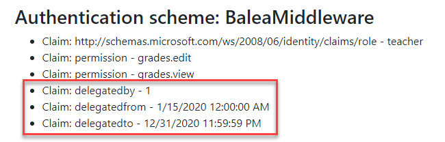

Delegate Permissions to another users¶
In role-based access model, delegation involves delegating roles to another users that can assume a set of permissions to access to the resources on behalf of the user. Balea supports the delegation of your permissions to another person. This article shows you how to configure Balea in order to use delegations.
> In samples/WebApp you’ll find a complete Balea example in ASP.NET Core using delegations.
Defining delegations¶
To delegate permissions to another user you must configure:
who: User (Subject id) who delegates permissions.
whom: User (Subject id) to delegating.
from: The date when delegation starts.
to: The date when delegation finish.
selected: If the user is acting on behalf of (Only one should be selected, if there are more than one selected, Balea selects the first one the user have selected).
An example of delegation:
{
"Balea": {
"applications": [
{
"name": "default",
"roles": [],
"delegations": [
{
"who": "1",
"whom": "2",
"from": "2020-01-15 00:00:00",
"to": "2020-12-31 23:59:59",
"selected": true
}
]
}
]
}
}
When you are acting on behalf of somenone, Balea adds new claims to the principal:
For example, a use case could be use the claim delegatedby in your queries to retrieve data that belongs to the user which has delegated his permissions.